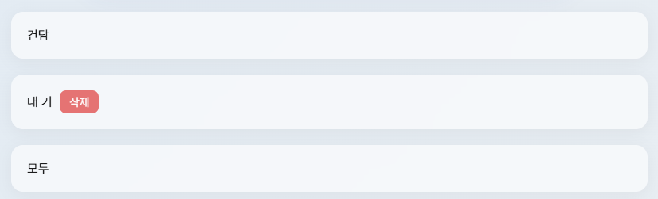
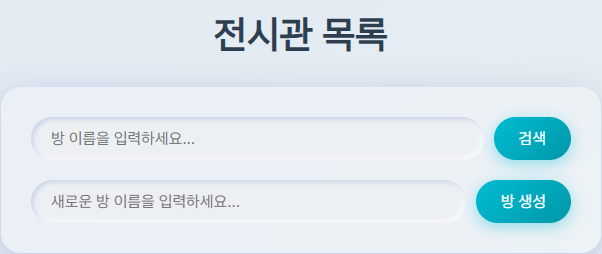
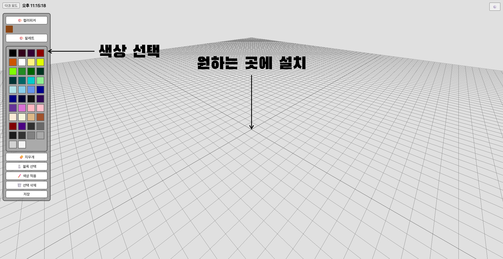
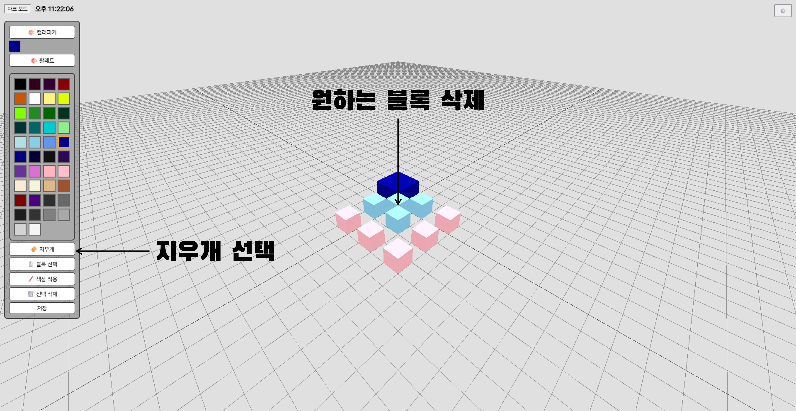
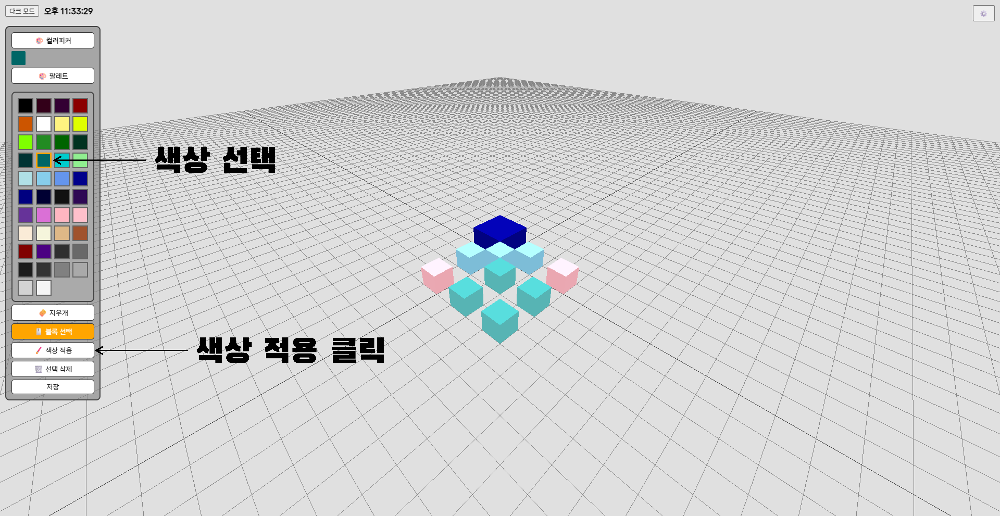
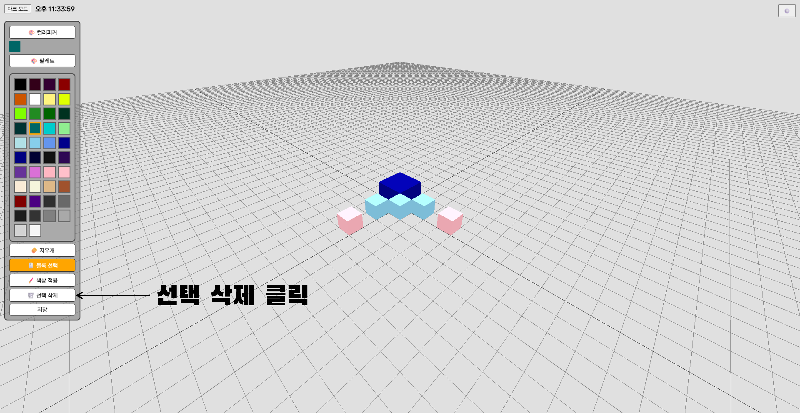

1. 전시관 탐색하기
전시관을 탐색하려면, 전시관 목록에서 원하는 전시관을 클릭하세요.
2. 전시관 생성하기
전시관을 생성하려면, 제목을 입력하고 방 생성 버튼을 클릭하세요.
3. 블록 설치하기
블록을 설치하려면, 원하는 색상을 선택하고 원하는 위치에 클릭하세요.
4. 블록 삭제하기
블록을 삭제하려면, 지우개 버튼을 클릭하고 원하는 블록을 클릭하세요.
5. 블록 선택하기
블록을 선택하려면, 블록 선택 버튼을 클릭하고 원하는 블록을 클릭하세요. Ctrl을 누른 채로 클릭하면 여러 개를 선택할 수 있습니다.
5.1. 색상 바꾸기
블록을 선택한 후, 원하는 색상을 선택하고 색상 적용 버튼을 클릭하세요.
5.2. 삭제하기
블록을 선택한 후, 선택 삭제 버튼을 클릭하세요.
